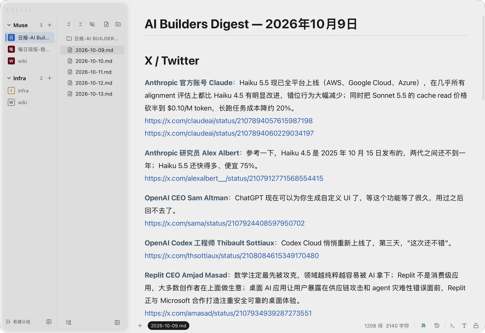
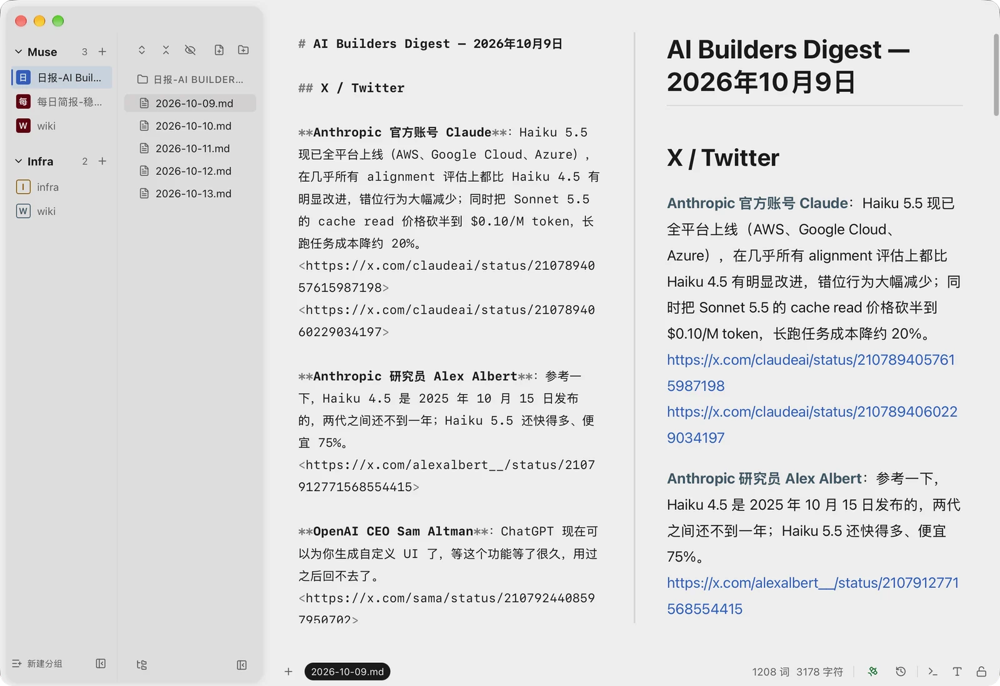
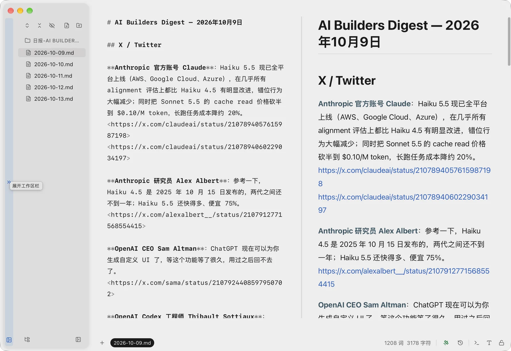
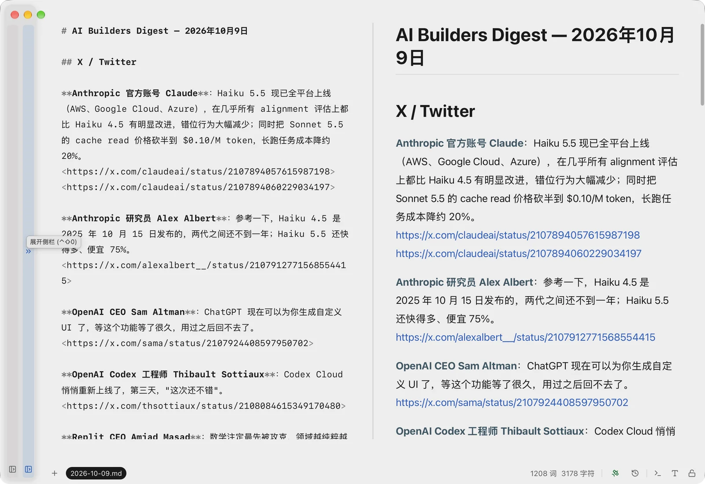

多个项目，随手切换。
用工作区列表打开不同文件夹，把常用项目放进分组。分组在重启后保留，同一个文件夹也可以属于多个分组。
为 Mac 而做 · 本地文件 · ISC 开源
工作区、文件树、文档，一个顺手的工作台。
写 Markdown、查看配置，或让 AI 和你读写同一批文件。

不必把内容搬进另一个系统。把项目文件夹打开，再按你的习惯整理，一切围绕原来的文件展开。
用工作区列表打开不同文件夹，把常用项目放进分组。分组在重启后保留，同一个文件夹也可以属于多个分组。
通过 MCP 连接 Claude、Codex 等兼容助手。你在编辑器里阅读和修改，AI 在同一批文件上协作，减少来回复制。
以本机文件夹为基础，不需要 XMark 云端账号。原有 Markdown、JSON、YAML、TOML 等文件，可以继续交给其他工具使用。
Markdown 支持可视化编辑、F5 源码快看和 F6 完整源码编辑。源码与预览并排，写作时也能照顾到细节。
代码文件默认高亮只读，按需启用编辑。

工作区和文件栏都能折成一条窄边。保留项目的入口，也把更多空间留给正在写的内容。


目前不提供安装包或 App Store 下载，需要自行使用 Xcode 构建。使用免费 Apple ID 签名时，通常每 7 天需要重新安装。
当前下载适用于 macOS 13.4 及以上的 Apple Silicon（M1 及更新）Mac。打开 DMG，把 XMark 拖入“应用程序”。安装包尚未经 Apple 公证，确认来源后按系统提示在“隐私与安全性”中选择“仍要打开”。
支持 Markdown、JSON / JSONL、YAML、TOML、Mermaid、SVG、安全隔离的 HTML 和纯文本。代码文件默认高亮只读，可以按需启用编辑或在自己的代码编辑器中打开。
打开“设置 → 集成”，在对应助手旁安装 MCP 配置。可连接 Claude Desktop、Claude Code、Codex CLI 及其他支持的客户端；需要自行准备对应 AI 服务。
XMark 以本机文件为基础，没有内置云端存储账号。连接 AI 助手或模型服务时，相关内容由你配置的服务处理；具体传输范围取决于你的操作与配置。
XMark 是 Xiaolai Li 的 VMark 的非官方分支版本，沿用 ISC 协议。与原作者无关，也未获得认可或背书；XMark 的使用问题请在本项目反馈。
目前不能。XMark Mobile 需要自行用 Xcode 构建并安装到 iPhone，通过 Tailscale 连接自己的电脑或服务器；手机端的阅读不会修改源文件。